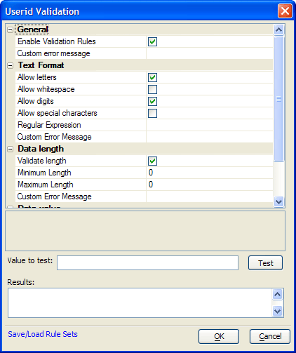

UserID Validation Dialog
The UserID Validation dialog defines the rules for accepting or rejecting a User ID. Refer to Setting Web Control Validation Rules for more information.

Limitations
Web publishing applications only.
See Also
Set Security Properties, Setting Web Control Validation Rules